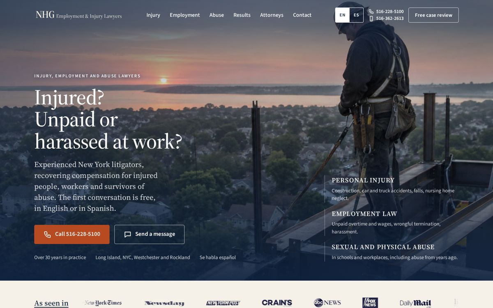
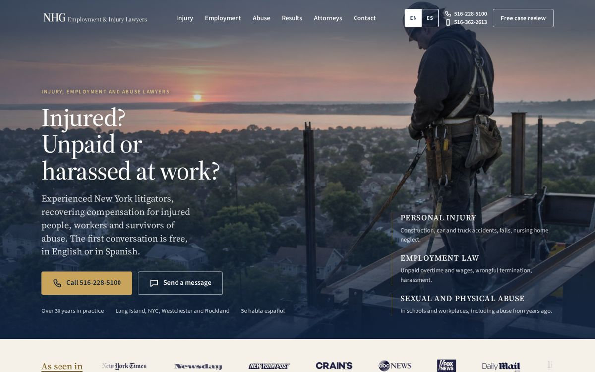
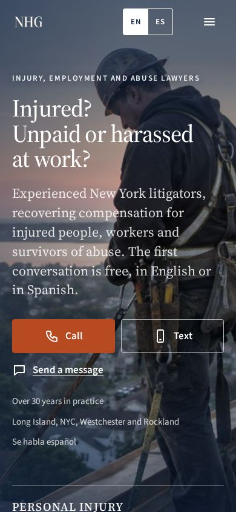
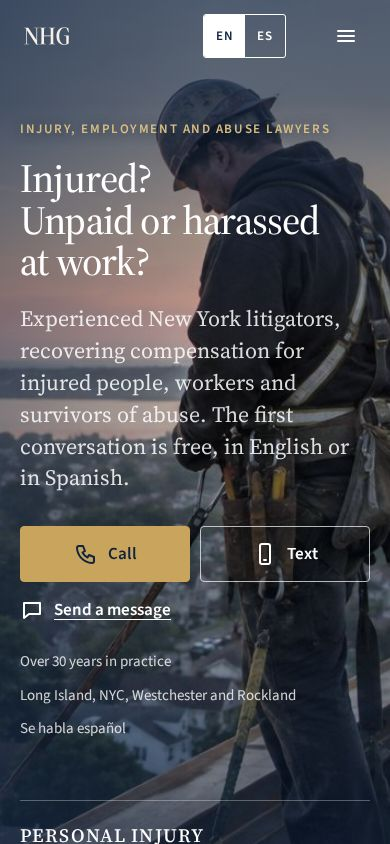
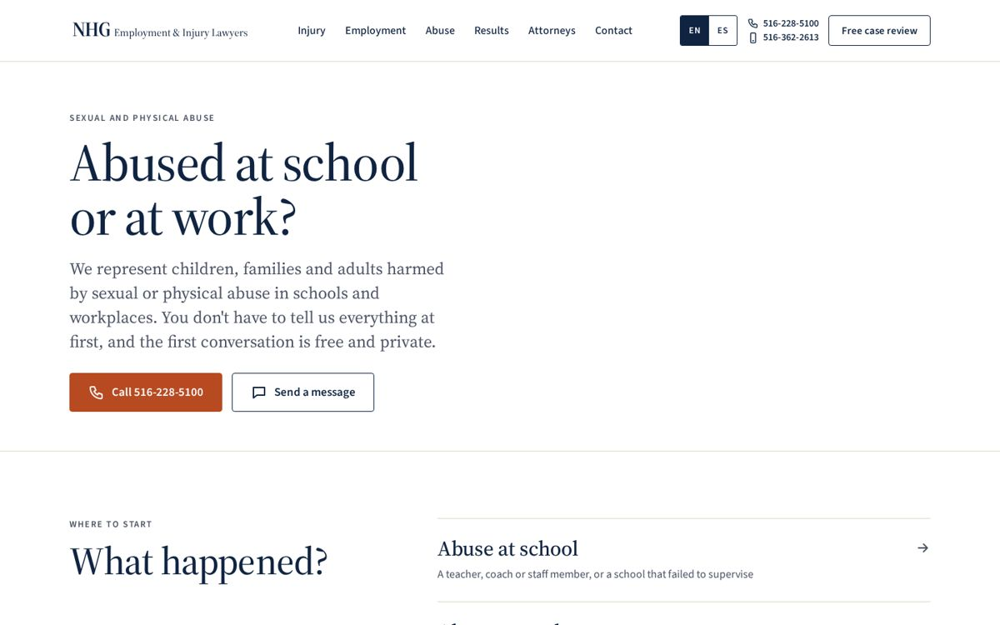
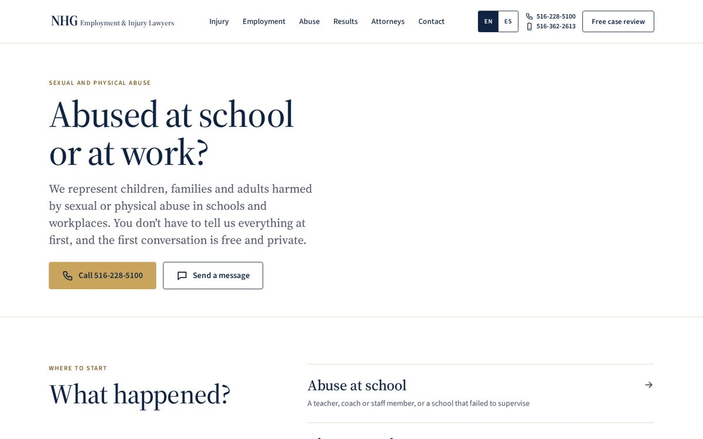
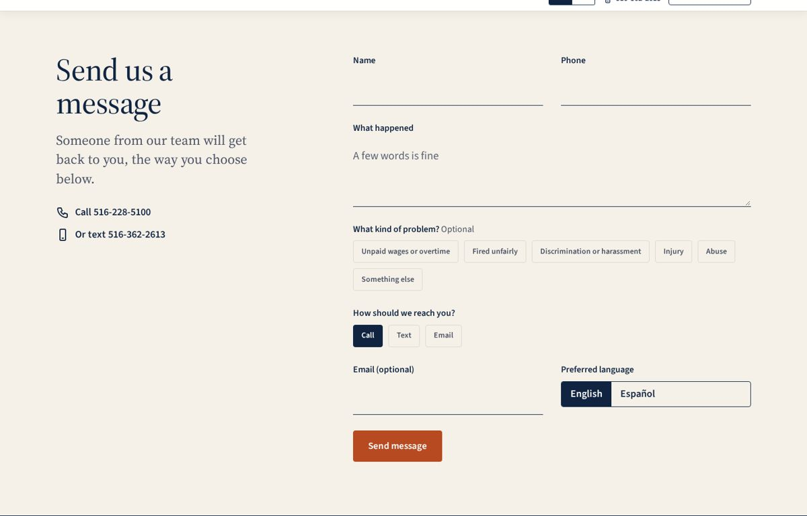
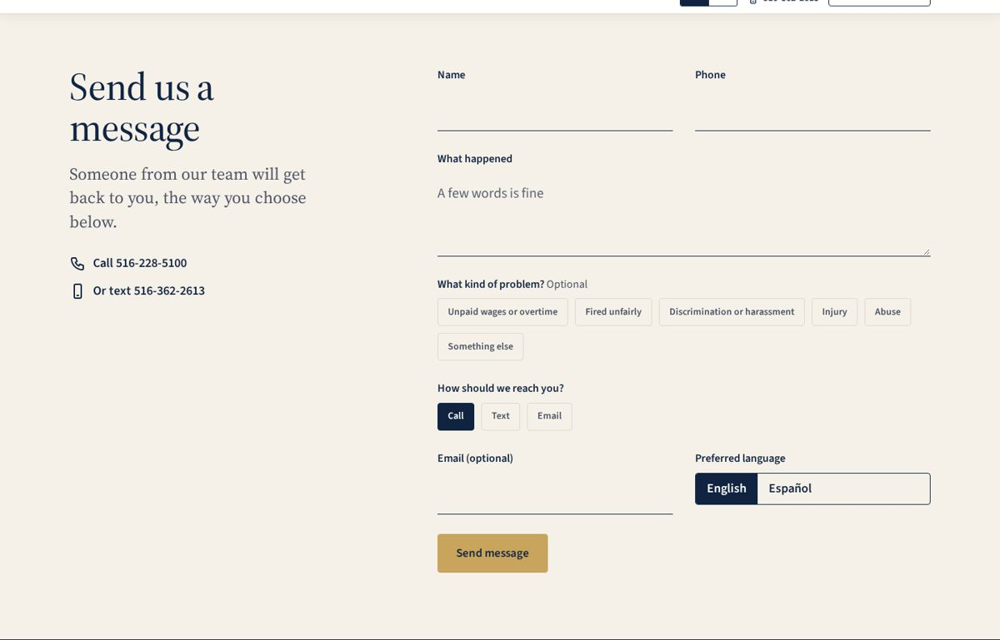

Current colours or navy and gold?
The same pages in both colour schemes. Everything else, the layout, type and wording, is identical. Navy and gold comes from the homepage mockups made in ChatGPT; the current scheme is navy, cream and a burnt-orange accent.
Navy stays in both. Current accent Gold accent (with navy text, so it stays readable)
Either link keeps that colour scheme on every page you open in that tab.
Homepage


On a phone


Sexual and physical abuse page


Contact form


Both versions meet accessibility contrast standards. The firm's logo and brand package were designed with the current colours; switching to gold would mean updating those too.